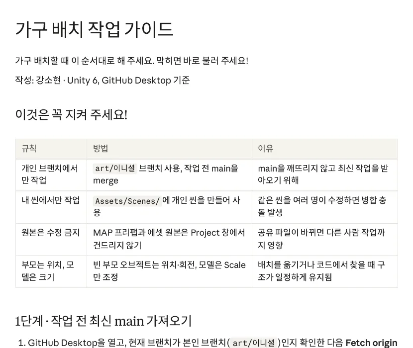

대상 · 팀 전체
가구 배치 작업 가이드
가구 배치에 팀 전체가 참여해, 모두가 따를 하나의 기준이 필요했습니다. Unity와 Git이 처음인 팀원도 따라 할 수 있게 스크린샷과 함께 단계별로 정리했습니다.

- 브랜치
- 개인 브랜치에서 작업, 시작 전 main merge
- 씬 분리
- 각자 개인 씬에서 작업해 같은 씬 충돌 차단
- 공용 자산
- 프리팹·에셋 원본은 수정 금지, 씬에서만 수정
- 계층 규칙
- 방 › 가구(빈 부모) › 모델. 부모는 위치·회전, 모델은 크기만
- 에셋 관리
- 지정 폴더, 고폴리 에셋은 배치 전 공유